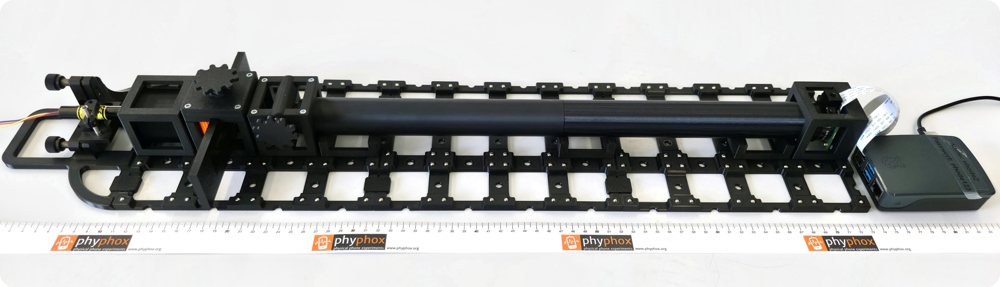
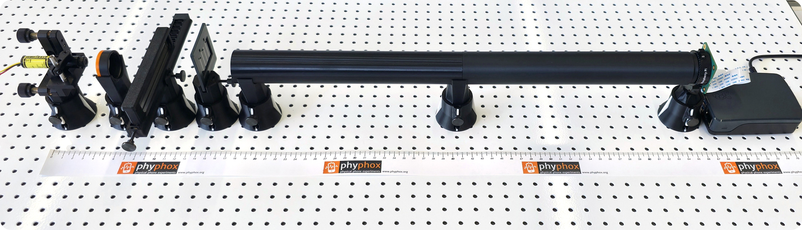
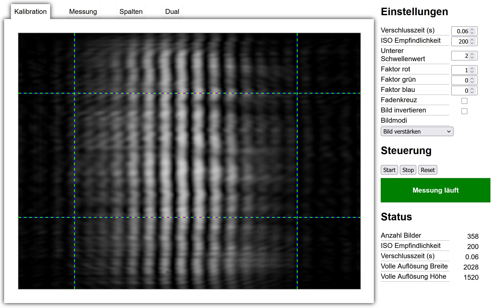
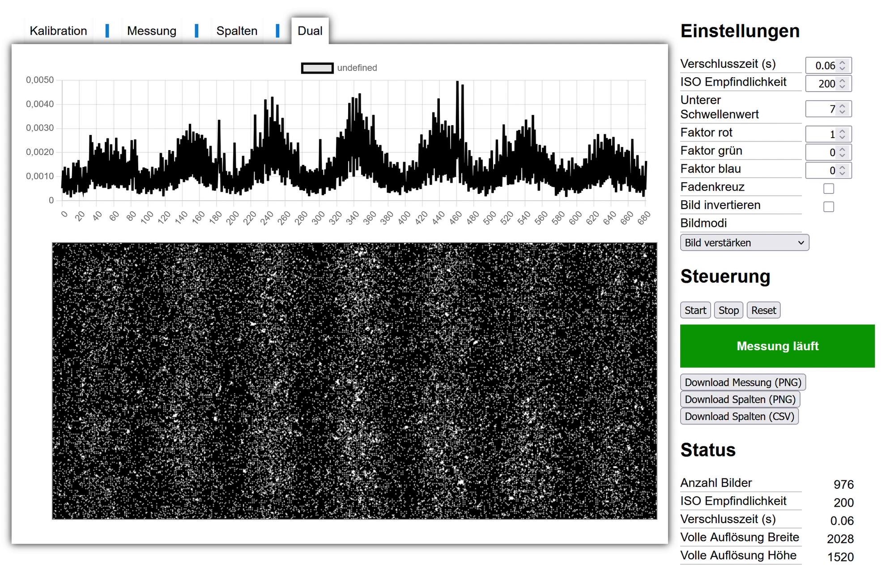
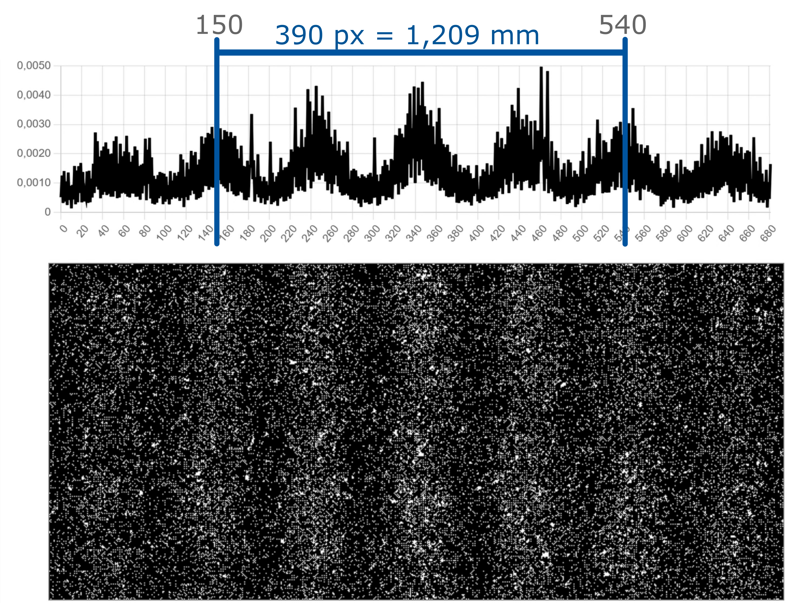

PHODE ist ein Analogieexperiment zum Welle-Teilchen-Dualismus mit stark abgeschwächtem Laserlicht und einem zweidimensionalen Detektor. Der Aufbau besteht aus modularen, 3D-gedruckten Elementen. PHODE ist in zwei Versionen verfügbar: kompatibel mit dem System O3Q[1] und kompatibel mit "The Bench"[2]. Alle Bauteile sind im Folgenden aufgelistet. PHODE is an analogy experiment for wave–particle duality using strongly attenuated laser light and a two-dimensional detector. The setup consists of modular, 3D-printed components. PHODE is available in two versions: compatible with the O3Q system[1] and compatible with "The Bench"[2]. All components are listed below.
Quantenphysikalische Phänomene treten in nahezu allen Themenbereichen der Physik auf, sind allerdings für Lernende oft schwer zugänglich, da sie sich nicht mit Alltagserfahrungen und vorher gelernten klassischen Vorstellungen beschreiben lassen. Es fehlen anschauliche und kostengünstige Realexperimente, die dazu dienen, die Quantenphysik greifbarer zu gestalten. Der Doppelspalt eignet sich besonders, um viele zentrale Inhalte und Fragen der Quantenphysik zu zeigen, er gilt daher als "didaktischer Alleskönner" der Quantenphysik[3]. Quantum phenomena occur across nearly all areas of physics, yet they are often hard for learners to grasp, since they cannot be described using everyday experience or previously learned classical concepts. There is a lack of vivid, low-cost real experiments that help make quantum physics more tangible. The double-slit experiment is particularly well suited to illustrating many of the central topics and questions of quantum physics, which is why it is considered the "didactic all-rounder" of quantum physics[3].
Eine zentrale Besonderheit von Quantenobjekten besteht dabei darin, dass sie sich nicht ausschließlich durch ein klassisches Teilchen- oder Wellenbild beschreiben lassen, sondern sowohl Teilchen- als auch Welleneigenschaften aufweisen. In der Schule werden diese Eigenschaften jedoch häufig anhand voneinander getrennter Experimente demonstriert. Dadurch kann die Vorstellung begünstigt werden, dass Quantenobjekte je nach experimenteller Situation entweder als Teilchen oder als Welle auftreten. Diesen Ansatz greift PHODE auf und bietet die Möglichkeit, innerhalb eines Doppelspaltversuchs Wellen- und Teilcheneigenschaften gleichzeitig in einem Experiment zu beobachten. Auf diese Weise ermöglicht PHODE einen verständlichen Zugang zu der Vorstellung, dass Photonen als Quantenobjekte sowohl durch Teilchen- als auch durch Welleneigenschaften beschrieben werden müssen. A key characteristic of quantum objects is that they cannot be fully described by a classical particle or wave picture alone, but instead exhibit both particle and wave properties. In schools, however, these properties are often demonstrated using separate experiments. This can encourage the misconception that quantum objects behave either entirely as particles or entirely as waves, depending on the experimental situation. PHODE addresses this by making it possible to observe wave and particle properties simultaneously within a single double-slit experiment. In this way, PHODE provides an accessible route to understanding that photons, as quantum objects, must be described by both particle and wave properties.


Auf einen Eintrag tippen, um weitere Informationen aufzuklappen. Tap an entry to expand more information.
Die Halterungen der optischen Elemente basieren auf dem modularen O3Q-Optiksystem ↗. The mounts for the optical elements are based on the modular O3Q optics system ↗.
Die Halterungen der optischen Elemente basieren auf dem magnetischen Haltersystem "The Bench". The mounts for the optical elements are based on the magnetic mounting system "The Bench".
🚧 Diese Variante befindet sich noch im Aufbau, die Kostenangaben sind vorläufig. 🚧 This variant is still under construction, the cost figures are preliminary.
Der Raspberry Pi läuft mit einer für PHODE entwickelten Software, die über eine WLAN-Weboberfläche bedient wird. The Raspberry Pi runs software developed specifically for PHODE, operated via a WLAN web interface.

Ein Livebild hilft bei der Justage; der Messbereich lässt sich direkt im Kamerabild per Klick festlegen. Belichtungszeit, ISO-Empfindlichkeit, ein unterer Schwellenwert zur Rauschunterdrückung sowie Gewichtungsfaktoren der drei Farbkanäle können frei eingestellt werden. A live view assists with alignment; the measurement region can be set directly in the camera image by clicking. Exposure time, ISO sensitivity, a lower threshold for noise suppression, and weighting factors for the three colour channels can all be freely adjusted.

Während der Messung summiert die Software die einzelnen Kamerabilder fortlaufend auf und stellt sowohl das aufsummierte Bild (Messung) als auch die daraus berechnete Intensitätsverteilung (Spalten) live dar. Im Reiter (Dual) wird sowohl das aufsummierte Bild als auch die Intensitätsverteilung dargestellt. So wird das Entstehen des Interferenzmusters über mehrere Minuten hinweg direkt sichtbar. Entwickelt wurde die Software von Sebastian Staacks. During a measurement, the software continuously accumulates the individual camera frames and displays both the summed image (Measurement tab) and the resulting intensity distribution (Columns tab) live. The (Dual) tab shows both the summed image and the intensity distribution together. This makes the gradual emergence of the interference pattern directly visible over several minutes. The software was developed by Sebastian Staacks.
Wie sich das Interferenzmuster von PHODE über einige Minuten aus einzelnen Ereignissen aufbaut, zeigt dieses Video. This video shows how the PHODE interference pattern gradually builds up from individual events over several minutes.
Video ansehenWatch video
Aus dem gemessenen Abstand der Interferenzmaxima Δx lässt sich die Wellenlänge λ des verwendeten Lasers bestimmen: λ = Δx · g / d. Dabei steht g für die Gitterkonstante (g = 1 mm) und d = 475 mm für den Abstand zwischen Doppelspalt und Kamera. From the measured spacing of the interference maxima Δx, the wavelength λ of the laser used can be determined: λ = Δx · g / d. Here, g denotes the grating constant (g = 1 mm) and d = 475 mm the distance between the double slit and the camera.
Damit ergibt sich für die Wellenlänge ein rechnerischer Wert von 636,12 nm und somit ein Ergebnis von 640 nm ± 40 nm, dieser Wert ist im Rahmen der Messunsicherheit vereinbar mit der Herstellerangabe von 635 nm. This gives a calculated wavelength of 636.12 nm and thus a result of 640 nm ± 40 nm, a value consistent, within measurement uncertainty, with the manufacturer's stated 635 nm.
Vorüberlegungen zum didaktischen Potential, bestätigt durch eine Erprobung mit fünf Physik-Lehrkräften: Considerations on the didactic potential, confirmed in a trial with five physics teachers:
„Ich finde, es hat den großen didaktischen Mehrwert, dass ich als Lehrkraft sehr schön in einem Demonstrationsexperiment einmal zeigen kann, was Sache ist.“ "I think it has great didactic value because, as a teacher, I can nicely show what's really going on in a demonstration experiment."
„Ich finde es sehr übersichtlich. […] Es ist keine Blackbox, alles ist einzeln zu erkennen. Das, finde ich, macht den Aufbau übersichtlich und gut einsetzbar.“ "I find it very clear. […] It's not a black box, everything can be identified individually. I think that makes the setup clear and easy to use."
„Wir haben einen Laser und wir filtern den so raus, dass man da sieht, okay, da kommen nur einzelne Impulse an, aber im Endeffekt entwickelt sich doch ein Interferenzmuster. Also sozusagen diese Aspekte, Welle, Teilchen, sieht man da schon ganz schön.“ "We have a laser and we filter it down so that you see, okay, only individual pulses are arriving, but in the end an interference pattern still develops. So you can really see these aspects, wave, particle."
„…die ersten paar Photonen, die drauftreffen, zu sagen: Okay, das könnte jetzt zufällig sein…“ "…the first few photons that hit, you'd say: okay, that could just be random…"
„Man muss ja einmal so ein Bild haben, wo man erstmal nichts erkennt. […] Und jetzt komme ich schon in den Bereich, wo man sagt, ja, okay, doch, da zeichnet sich irgendwas ab.“ "You need to have seen an image where at first you can't make anything out. […] And then you get to the point where you say, okay, yes, something is starting to take shape."
„Ich kann mir gut vorstellen, auf einem großen Bildschirm […] die Messwerte aufbauen zu lassen, das mit den Schülern zu diskutieren, dass man schnell den Übergang dann hat zum Teilchencharakter und nachher zum Dualismus dann auch.“ "I can well imagine letting the measurement data build up live on a big screen […] and discussing it with students, so that you quickly get to the particle character and then to the duality as well."
„Interessant kann das dann ja auch werden, wenn man Projektkurse, Projektarbeiten, Facharbeiten da mit andenkt. […] Die ganze Herstellung ist ja ein kleines Projekt, […] und in Physik, Technik, Informatik […] könnte das ja auch eine Projektarbeit sein.“ "It also gets interesting when you think about project courses, projects, extended essays. […] The whole build is a small project in itself […] and in physics, technology, computer science […] it could well be a project too."
Fragen, Rückmeldungen oder Interesse an den Materialien? Meldet euch gerne. Questions, feedback, or interested in the materials? Feel free to get in touch.
AG Prof. Dr. Heinke · I. Physikalisches Institut IA · RWTH Aachen University
Oder direkt per Mail:Or directly by email: thimm@physik.rwth-aachen.de
Team: Sebastian Staacks (Software), Ralf Detemple, Heidrun Heinke. Team: Sebastian Staacks (software), Ralf Detemple, Heidrun Heinke.